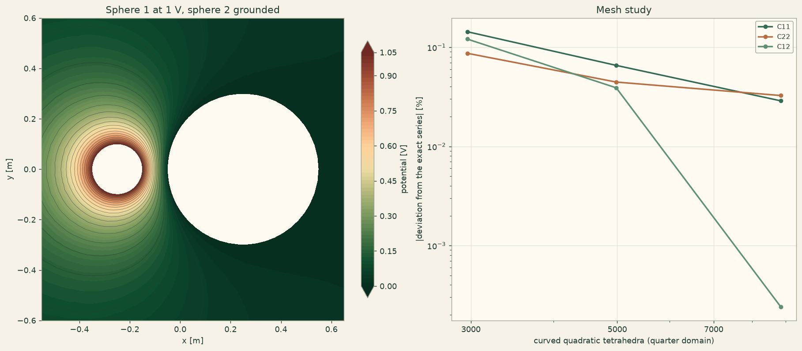
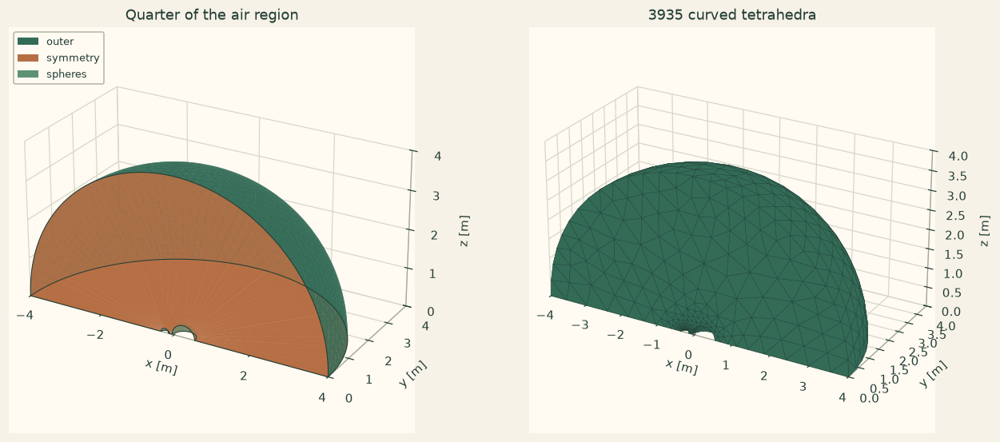

Docs › Examples › Capacitance matrix of two spheres
Electrostatics · 3D
Capacitance matrix of two spheres
Two conducting spheres of different size near each other: the full 2x2 capacitance matrix, graded against the exact bispherical series.
Run locally with OneSimulation. The example downloads are free. Running them requires an activated runtime. Runtime Alpha 0.2.1a7 · CPython 3.13 on macOS (Apple Silicon), Ubuntu 22.04 (x86-64), and Windows x64. Installation and activation · View pilot plans. Scope of the reference checks.


What it computes
The air around both spheres is read from a STEP file with named faces. OneSimulation solves the 3D Laplace equation with quadratic elements on curved tetrahedra in a quarter domain, exciting each sphere in turn, on three meshes. The script that builds the STEP file comes with the notebook.
What it checks
Self and mutual capacitances agree with the exact series to 0.02 %, 0.02 % and 0.003 % on the finest of three meshes, and to 0.1 % on the coarsest.
Geometry
The notebook starts at the import of the CAD file two_spheres_capacitance_matrix.step: STEP (AP242), readable by any CAD program, with the names of the faces that the boundary conditions use. Put it next to the notebook.


The geometry script
The script two_spheres_capacitance_matrix_geometry.py builds the geometry with the CAD objects of OneSimulation and writes the file. Change a dimension there, run it, and run the notebook again.
"""Geometry of the OneSimulation example "Capacitance matrix of two spheres".
Builds the air around two conducting spheres (radii 0.1 m and 0.3 m, centres 0.5 m apart) with the
CAD objects of OneSimulation: a quarter of a sphere of 4 m radius, cut by the two symmetry planes
through the common axis, with the two conductors removed. The part is written to
two_spheres_capacitance_matrix.step with the face groups sphere_1, sphere_2, outer, section and
symmetry.
"""
from onesim.cad.d3 import Box, Sphere
a, b, c, outer_radius = 0.1, 0.3, 0.5, 4.0
quarter = Box(
length=2 * outer_radius,
width=outer_radius,
height=outer_radius,
origin=(-outer_radius, 0.0, 0.0),
)
air = Sphere(radius=outer_radius) & quarter.named("plane")
air = air - Sphere(radius=a, origin=(-c / 2, 0.0, 0.0)).named("sphere_1")
air = air - Sphere(radius=b, origin=(c / 2, 0.0, 0.0)).named("sphere_2")
faces = air.boundaries
air = air.grouped(
sphere_1=faces.sphere_1,
sphere_2=faces.sphere_2,
outer=faces.surface,
section=faces["plane.z_min"],
symmetry=faces["plane.y_min"] | faces["plane.z_min"],
)
air.save("two_spheres_capacitance_matrix.step")The notebook
The complete notebook, cell by cell. Run it to produce the figures and the comparison printout.
Two conducting spheres with the radii \(a=0.1\) m and \(b=0.3\) m have their centres \(c=0.5\) m apart, a gap of only 0.1 m. Their charges depend linearly on both potentials,
Column \(j\) of this Maxwell capacitance matrix follows from holding sphere \(j\) at 1 V and the other at 0 V, solving Laplace's equation \(\nabla\cdot(\varepsilon_0\nabla V)=0\) in the air and reading the charge on both spheres.
The air comes from the CAD file two_spheres_capacitance_matrix.step: a sphere of 4 m radius, grounded on its surface, with the two conductors removed and reduced to a quarter by the two symmetry planes through the common axis. Its face groups are sphere_1, sphere_2, outer, section and symmetry. The script two_spheres_capacitance_matrix_geometry.py builds it with the CAD objects of OneSimulation.
Reference. In bispherical coordinates the problem has an exact series solution (W. R. Smythe, Static and Dynamic Electricity, 1950; J. Lekner, J. Electrostatics 69, 2011), with \(\cosh u=(c^2-a^2-b^2)/(2ab)\):
and \(C_{22}\) like \(C_{11}\) with \(a\) and \(b\) exchanged.
import numpy as np
from onesim.cad.d3 import Sphere
from onesim.cad.exchange import load
from onesim.materials import VacuumPermittivity
from onesim.meshing import LocalRefinement, TetrahedralMesher
from onesim.numerics import Numerics
from onesim.numerics.fem import FiniteElement, Lagrange
from onesim.numerics.linear import SparseDirect
from onesim.physics.electrostatics import (
FixedPotential,
PoissonEquation,
ZeroNormalElectricDisplacement,
)
from onesim.simulation import Problem, Simulation
from onesim.visualization import plots, theme
theme.set()Geometry and mesh
load returns the air with its named faces; the radii and centres of the spheres are read from the face records. Curved quadratic tetrahedra follow the spherical surfaces; local refinement resolves the spheres and the gap. Three meshes serve the mesh study.
air = load("two_spheres_capacitance_matrix.step")
faces = air.boundaries
spheres = (faces.sphere_1, faces.sphere_2)
surface = {face.id: face for face in air.faces}
a, b_radius, outer_radius = (
surface[name].radius for name in ("sphere_1.surface", "sphere_2.surface", "surface")
)
centres = np.array(
[surface[name].center[0] for name in ("sphere_1.surface", "sphere_2.surface")]
)
gap_centre = 0.5 * ((centres[0] + a) + (centres[1] - b_radius))
sizes = (0.034, 0.024, 0.017)
meshes = [
TetrahedralMesher(
target_size=0.15 * outer_radius,
geometry_order=2,
max_candidate_cells=1_000_000,
refinements=(
LocalRefinement(region=faces.sphere_1, target_size=size),
LocalRefinement(region=faces.sphere_2, target_size=2 * size),
LocalRefinement(
region=Sphere(radius=0.12, origin=(gap_centre, 0.0, 0.0)),
target_size=size,
),
LocalRefinement(region=Sphere(radius=0.6), target_size=6 * size),
),
).generate(air)
for size in sizes
]
view = plots.Camera(elevation=25, azimuth=-60)
fig = plots.figure(1, 2, size=(14, 6))
plots.geometry(
air,
selection={
"outer": faces.outer,
"symmetry": faces.symmetry,
"spheres": faces.sphere_1 | faces.sphere_2,
},
labels=False,
camera=view,
title="Quarter of the air region",
ax=fig[0],
)
plots.mesh(
meshes[0],
groups=("all",),
legend=False,
camera=view,
title=f"{meshes[0].cell_count} curved tetrahedra",
ax=fig[1],
)
plots.show()Model and solution
potential.reaction(boundary) returns the charge on a conductor of the quarter model. The grounded outer sphere replaces infinity; its effect on the potential coefficients \(P=C^{-1}\) is the image term \(1/(4\pi\varepsilon_0R)+x_ix_j/(4\pi\varepsilon_0R^3)\), which is added back.
scale = 4 * np.pi * float(VacuumPermittivity().evaluate())
model = PoissonEquation(domain=air.volume, permittivity=VacuumPermittivity())
numerics = Numerics(
spatial=FiniteElement(element=Lagrange(order=2), quadrature_order=5),
linear_solver=SparseDirect(),
)
def capacitance_matrix(mesh):
"""Free-space Maxwell matrix on a mesh, and the potential with sphere 1 at 1 V."""
potentials = []
for driven in range(2):
problem = Problem(
name="Two-sphere capacitance",
geometry=air,
physics=(model,),
boundary_conditions=(
FixedPotential(boundary=spheres[driven], physics=model, value=1.0),
FixedPotential(
boundary=spheres[1 - driven] | faces.outer, physics=model, value=0.0
),
ZeroNormalElectricDisplacement(boundary=faces.symmetry, physics=model),
),
)
potentials.append(
Simulation(problem=problem, mesh=mesh, numerics=numerics)
.solve_stationary()
.field(model.potential)
)
grounded = np.array(
[[4.0 * potentials[j].reaction(spheres[i]) for j in range(2)] for i in range(2)]
)
image = 1.0 / (scale * outer_radius) + np.outer(centres, centres) / (
scale * outer_radius**3
)
return np.linalg.inv(np.linalg.inv(grounded) + image), potentials[0]
matrices, fields = zip(*(capacitance_matrix(mesh) for mesh in meshes))Results
The matrix entries on the three meshes against the exact bispherical series.
def series_capacitance(a, b, c, terms=200):
"""Maxwell capacitance matrix of two spheres in free space from the bispherical series."""
u = np.arccosh((c * c - a * a - b * b) / (2 * a * b))
n, m = np.arange(terms), np.arange(1, terms)
with np.errstate(over="ignore"):
c11 = (
a
* b
* np.sinh(u)
* np.sum(1 / (a * np.sinh(n * u) + b * np.sinh((n + 1) * u)))
)
c22 = (
a
* b
* np.sinh(u)
* np.sum(1 / (b * np.sinh(n * u) + a * np.sinh((n + 1) * u)))
)
c12 = -a * b / c * np.sinh(u) * np.sum(1 / np.sinh(m * u))
return scale * np.array([[c11, c12], [c12, c22]])
C_exact = series_capacitance(a, b_radius, centres[1] - centres[0])
entries = {"C11": (0, 0), "C22": (1, 1), "C12": (0, 1)}
deviation = {
name: [100 * (C[ij] / C_exact[ij] - 1) for C in matrices]
for name, ij in entries.items()
}
print("tetrahedra " + " ".join(f"{name} [pF] dev. [%]" for name in entries))
for k, mesh in enumerate(meshes):
print(
f"{mesh.cell_count:10d} "
+ " ".join(
f"{matrices[k][ij] * 1e12:8.4f} {deviation[name][k]:+8.3f}"
for name, ij in entries.items()
)
)
print(
"exact series "
+ " ".join(f"{C_exact[ij] * 1e12:8.4f} " for ij in entries.values())
)
print(
f"reciprocity on the finest mesh: C12 / C21 - 1 = {matrices[-1][0, 1] / matrices[-1][1, 0] - 1:+.1e}"
)Figure
The potential in the plane through both centres with sphere 1 at 1 V, and the mesh study.
fig = plots.figure(1, 2, size=(14, 6))
plots.surface(
fields[-1],
boundary=faces.section,
symmetry={"planes": [((0, 1, 0), (0, 0, 0))]},
limits=(0.0, 1.0),
contours=19,
subdivisions=3,
label="potential [V]",
title="Sphere 1 at 1 V, sphere 2 grounded",
xlimits=(-0.55, 0.65),
ylimits=(-0.6, 0.6),
ax=fig[0],
)
plots.convergence(
[mesh.cell_count for mesh in meshes],
{name: np.abs(values) for name, values in deviation.items()},
xlabel="curved quadratic tetrahedra (quarter domain)",
ylabel="|deviation from the exact series| [%]",
title="Mesh study",
ax=fig[1],
)
plots.show()Going further
Move the spheres closer (c = 0.42 in two_spheres_capacitance_matrix_geometry.py, then write the STEP file again) and watch \(C_{12}\) grow as the gap closes; the mesh then needs a smaller cell size in the gap. The circuit-style capacitances follow from the matrix: each sphere to ground \(C_{11}+C_{12}\) and \(C_{22}+C_{12}\), sphere to sphere \(-C_{12}\).